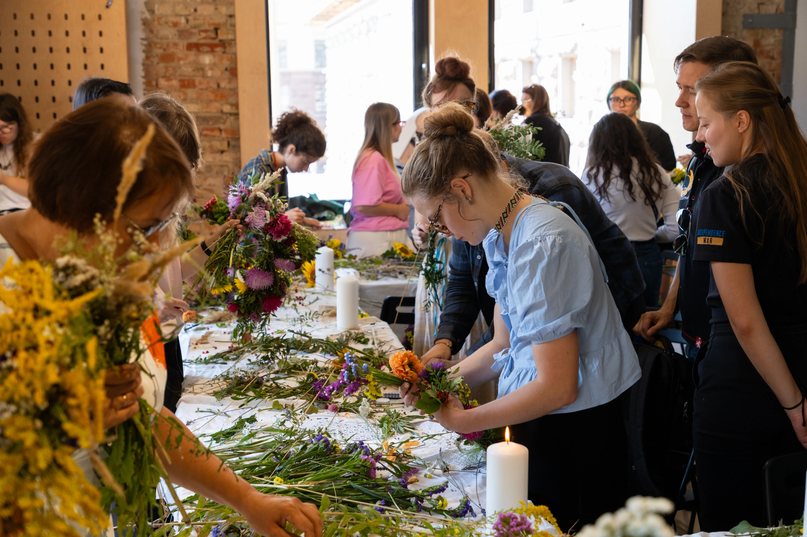

Вінкування
- Напрями
- Суспільство
29 серпня 2026 року, в День памʼяті загиблих захисників та захисниць, ми відновлювали давню українську традицію вінкування на честь полеглих. Родини та друзі загиблих під розповіді про їх найщасливіші моменти власноруч створювали вінки з живих квітів. Кожна квітка та рослинка – як спомин про рідну людину: волошка – бо він мав сині очі…